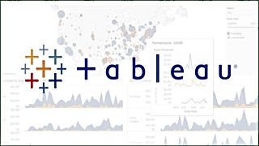

A comprehensive data engineering project involves leveraging various Azure services, including Azure Data Factory, Azure Databricks, and Azure Synapse Analytics,
to build an end-to-end solution for processing and analyzing large-scale datasets. By integrating these services, the project aims to streamline data ingestion,
transformation, analysis, and querying processes, ultimately enabling efficient and scalable data processing for actionable insights.

Developed a CNN model using PyTorch to classify 3D geometric shapes, achieving a validation accuracy of 99.77%.
Utilized preprocessing techniques, including image transformation and dataset splitting, to prepare for training and validation.
Demonstrated proficiency in Deep Learning concepts, including model building, training, evaluation, and model saving/loading, showcasing expertise in Python, PyTorch, and data manipulation.

This project showcases expertise in data engineering, employing Python, SQL, and Google Cloud Platform services to process
Uber trip data efficiently. Utilizing data modeling concepts enhanced analytical capabilities, while Mage on Google Compute
Engine automated transformation processes. Interactive dashboards created with Google Data Studio facilitated insightful data exploration. Overall, this project demonstrates essential skills for data engineering roles.
This project involves the development of a Python script for real-time cryptocurrency data retrieval,
utilizing JSON normalization for storage in a pandas Data Frame. It includes timestamp addition, continuous dataset enrichment,
and employs seaborn/matplotlib for visualization, ultimately exporting data in CSV and JSON formats for large dataset maintenance.
In addition, the project incorporates efficient error handling, ensuring seamless real-time data retrieval.

Led a comprehensive World Population Analysis using Python, Pandas, and Seaborn. Conducted detailed EDA, ensuring data integrity through preprocessing. Employed correlation analysis to uncover trends, presenting findings through
Seaborn visualizations. Demonstrated adaptability by calculating continent-level mean population trends. Showcased technical mastery and efficient coding practices, deriving actionable insights from large datasets.
Focused on meticulous cleaning and transformation of raw housing data in a SQL Server database. Used SQL statements and functions to standardize date formats,
address missing property addresses, decompose address fields, remove duplicate records, and optimize the dataset by eliminating unnecessary columns. Aimed to refine and structurally enhance the data for advanced analytical processes, establishing a robust foundation for comprehensive analysis.

Constructed a comprehensive data analyst portfolio featuring meticulously updated Tableau dashboards. Employed advanced SQL and Python techniques for thorough dataset cleaning,
ensuring data integrity, and enabling the creation of visually compelling and analytically robust visualizations. The result is a showcase of actionable insights
derived from curated datasets.

Conducted detailed analysis of survey responses, creating a comprehensive dashboard highlighting key insights. Visualized geographical distribution, participants' preferred programming languages,
average job salaries by title, and gauged work-life and salary satisfaction. Explored the perceived difficulty of entering the data science field. Presented a concise overview, offering valuable insights for strategic decision-making..